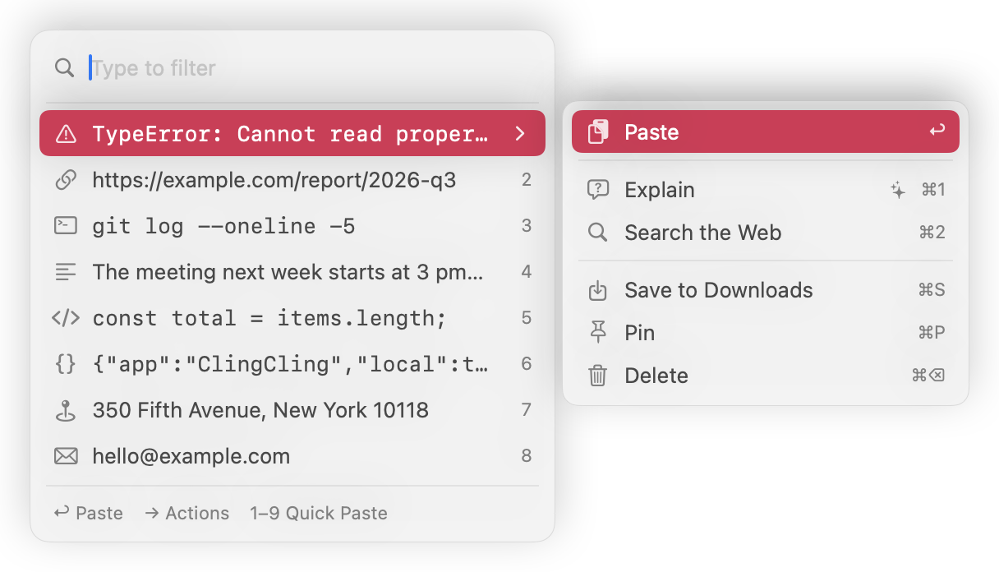
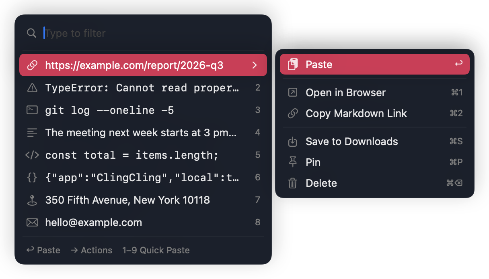

ClingCling
ClingClingWhat you copy decides what comes next
Every kind pastes with ↩. Of the other actions, the one furthest left is the top suggestion. The ones you pick most move forward over time. That learning stays on your Mac too.


| Kind | What you copied | Suggested actions |
|---|---|---|
| URL | https://example.com/report/2026-q3 |
|
| Error | TypeError: x is not a function |
|
| Command | git log --oneline -5 |
|
| Text | The meeting moves to Wednesday at 3 pm. |
|
| JSON | {"app":"ClingCling","local":true} |
|
| Code | const total = items.length; |
|
hello@example.com |
| |
| Address | 350 Fifth Avenue, New York 10118 |
|
| Login code | 482913 |
|
| Image | Screenshots, images from the web or Preview |
|
| File | Files and folders copied in Finder |
|
Try it here. Click a sample, press ⌘C, then ⌘⇧V, and the popup opens right there. Any text on this page works. The check runs in your browser and nothing you copy is sent anywhere.
Done from the keyboard
- ⌘⇧V
- Open beside the cursor
- ↑ ↓
- Move through history
- ↩
- Paste
- 1–9
- Paste the nth item
- →
- Show the actions
- ⌘1–3
- Run a suggested action
- ⌘S
- Save to Downloads
- ⌘P
- Pin
Type to filter your history
Case is ignored, and so are full-width and half-width forms and hiragana and katakana. Spaces mean AND. While you compose Japanese text, the keys go to the input method as usual.
In apps that don't report the cursor position, the popup opens at the mouse pointer. You can change the shortcut in Settings.
ClingCling makes no network connections without asking
Every check runs on your Mac. What you copy decides how far it can travel, and most of it never leaves your Mac. The only connection is checking GitHub's release list for new versions, and only if you allow it (it's off by default).
| What you copied | Memory | Disk | AI |
|---|---|---|---|
| IgnoredPassword managers, copies marked concealed, apps you exclude | No | No | No |
| Gone in 5 minutesAPI keys, JWTs, private keys, card numbers, login codes | 5 minutes | Never written | Blocked |
| Stays on your MacEmail addresses, phone numbers, street addresses, images, files, random-looking strings | Kept | Saved | Blocked |
| To AI when you askText, URLs, code, commands, errors, JSON | Kept | Saved | After you confirm |
What it can't catch
- Detection relies on rules and entropy. Passwords with no recognizable format and people's names aren't detected, so they are saved as ordinary text and can go to AI. Read the confirmation screen before you send.
- The source app is whichever app is frontmost at the 0.4-second check. If you switch apps right after copying, it may be recorded as a different app.
How history is stored
- History is an SQLite database with 0600 file permissions. It is not encrypted.
- The folder is excluded from Time Machine backups.
- Links other than web pages and Run in Terminal ask for confirmation first.
AI sees it only when you ask
No API key needed. ClingCling hands your text and an instruction to the Claude or ChatGPT app or website you already use. This stays off until you turn it on in Settings.
- Press → on a history item and choose Explain
- Read the instruction and text on the confirmation screen
- ClingCling opens the app and pastes into a new chat, or opens a URL
- Your clipboard goes back to what it was
You can edit the instructions and add your own named actions, like “Summarize in 3 lines” or “Make it formal.”
Opens Claude, then pastes the following instruction and 62 characters of text into a new chat.
TypeError: Cannot read properties of undefined (reading 'map')
Put it on your Mac
Open the dmg, drag ClingCling.app to Applications, and open it. Opening beside the text cursor needs the Accessibility permission.
macOS 14 or later on a Mac with Apple silicon. Signed with a Developer ID and notarized by Apple. All releases
You can also build from source. Xcode isn't required.
git clone https://github.com/mori-ri/ClingCling.git
cd ClingCling
./scripts/bundle.sh
open build/ClingCling.app